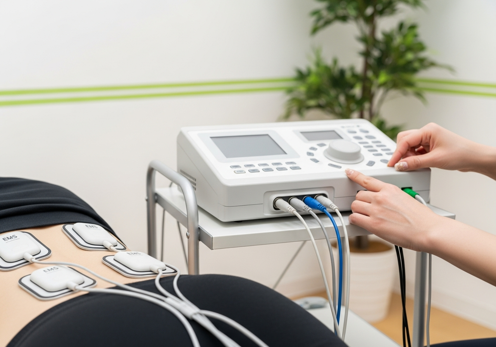

⚡
神経性の痛み
坐骨神経痛など、神経が関わる痛みにアプローチ。

ES-5000は、立体動態波・微弱電流・神経筋刺激など複数の電気刺激を使い分けられる治療器です。手技だけでは届きにくい体の深部や、神経性の痛み・しびれにまでアプローチできます。
プロアスリートのコンディショニングの現場でも用いられる治療器で、急性のケガから慢性的な不調まで、症状に合わせて最適な刺激を選んで施術します。
坐骨神経痛など、神経が関わる痛みにアプローチ。
深部に届く刺激で、しびれ感のケアをサポート。
捻挫・肉離れなど、急な痛みの回復を後押し。
手が届きにくい奥のこり・張りにアプローチ。
競技復帰を見据えたコンディショニングに。
繰り返す痛みの緩和と回復をサポートします。
| 立体動態波 | 3つの電流を体内で立体的に干渉させ、深部の筋肉までしっかり刺激。コリや痛みの緩和に。 |
|---|---|
| 微弱電流（マイクロカレント） | 体内の自然な電流に近い微弱な刺激で、損傷した組織の回復をやさしくサポート。 |
| 神経筋刺激（EMS） | 筋肉に直接働きかけ、機能回復やインナーマッスルのケアに役立ちます。 |
※症状に合わせて、手技治療や酸素カプセルと組み合わせてご提案します。施術メニュー・料金ページもご覧ください。
ES-5000で痛みにアプローチしながら、酸素カプセルで全身に酸素を届けると相乗効果が期待できます。
神経性の痛みやしびれ、坐骨神経痛、深部のコリ、捻挫や肉離れなどの急性のケガ、スポーツ外傷まで幅広く対応します。
痛みはほとんどありません。心地よい刺激の範囲で出力を調整しながら施術します。
原因がはっきりしたケガなどには保険が適用される場合があります。症状により自費施術となることもあります。詳しくは受付でご案内します。
はい。手技治療や酸素カプセルと組み合わせることで、回復をより効率的にサポートできます。